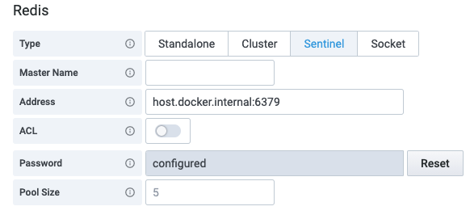

Redis Data Source configuration¶
Data Source can connect to any Redis database On-Premises or in the Cloud. You can add as many data sources as you want to support multiple Redis databases.

Redis accepts clients connections on the configured listening TCP port and the Unix socket if enabled. Cluster is a distributed implementation of OSS Redis and Sentinel provides high availability.
Main configuration¶
Address¶
Specify host:port address or a URI. Please use /db-number or ?db=db-number to specify the database number as defined in the Schema:
redis://redis-server:6379/0
ACL¶
Available since Redis 6.0 and allows to specify Username to authenticate.

Password¶
Passwords and TLS certificates/keys are kept in the Grafana security database and not shown to users.
When specified AUTH command will be used to authenticate with the provided password.
Pool Size¶
Data source will keep open at least the given number of connections to the redis instance at the given address. The recommended size of the pool is 5 and can be increased if dashboards have a lot of panels and multiple users.
Cluster¶
In Cluster mode Address can contain multiple values (host:port address or a URI) with comma.
Sentinel¶
In Sentinel mode Address can contain multiple values (host:port address or a URI) with comma. Also, provide Master Name to connect to.

Unix socket¶
In Unix socket mode Address should contain path to the socket file.
Advanced configuration¶
Timeout¶
Sets the duration in seconds for connect, read and write timeouts. Default value is 10 seconds.
Ping Interval¶
Specifies the interval in seconds at which a ping event happens. A shorter interval means connections are pinged more frequently, but also means more traffic with the server. If interval is zero then ping will be disabled. Default value is 0.
Pipeline Window¶
Sets the duration in microseconds after which internal pipelines will be flushed. If window is zero then implicit pipelining will be disabled. Default value is 0.
SSL/TLS¶
To enabled SSL/TLS authenticate enable it and provide all required parameters.

Skip Verify¶
If checked, the server's certificate will not be checked for validity. Should be enabled for Self-Signed certificates.
Client Certificate and Key¶
Passwords and TLS certificates/keys are kept in the Grafana security database and not shown to users.
Client Certificate and Key should be provided when client authentication is enforced.
Certification Authority¶
Provide certificate to validate server's certificate or enable Skip Verify.
Plugin health check failed¶
Redis Data Source binaries should have executable permissions for Grafana to be able to execute it. Check out Quickstart page for more information.